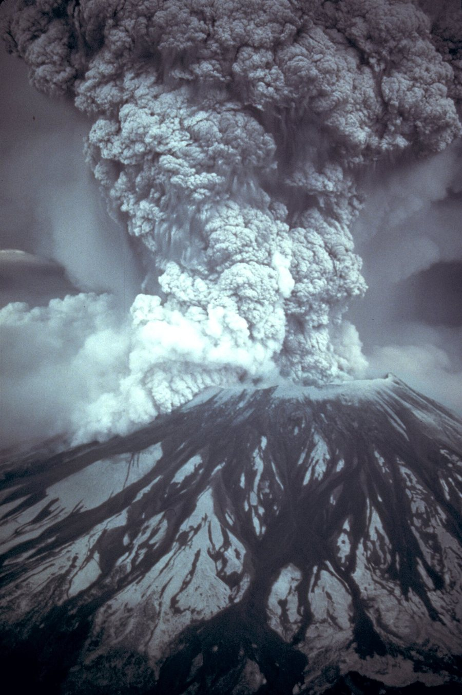

Viscosidad del magma, burbujas de gas y erupciones explosivas
En Kīlauea, en Hawái, se puede mirar la lava de cerca. En 1980, en cambio, el Monte Santa Helena tuvo una erupción enormemente explosiva. Las dos cosas son erupciones de un volcán, y la diferencia no es de tamaño, sino de mecánica de fluidos: depende de si las burbujas pueden salir o no.
La composición del magma, su viscosidad y su contenido de gas determinan muchos aspectos de una erupción, incluida su explosividad [1]. La clave es la sílice. La sílice disuelta en el magma tiende a unirse en cadenas moleculares: cuanta más sílice, más cadenas [2]. Esas cadenas se enredan entre sí, como espaguetis, y aumentan la resistencia a fluir [2]. Es decir, más sílice significa más viscosidad [2].
El magma lleva agua disuelta. A medida que sube, la presión baja, y llega un punto en que empieza a formar burbujas de vapor [2]. Es lo que hace el gas de una gaseosa al destaparla.
En un magma poco viscoso, las burbujas suben fácilmente, como en una cerveza, se expanden a medida que baja la presión, llegan a la superficie a presión atmosférica y escapan sin demasiado ruido [2]. Esa es la erupción tranquila de Kīlauea, con coladas de lava que pueden observarse de cerca [2].
En un magma muy viscoso, las burbujas se forman, pero no pueden subir, porque la resistencia al flujo es demasiado grande [2]. Tampoco tienen tiempo de expandirse: llegan a la superficie atrapadas, a una presión mayor que la atmosférica [2]. Esa diferencia es la receta de una explosión: el gas se expande de golpe y destroza el magma en incontables fragmentos diminutos [2].
Una cuenta sencilla muestra la diferencia. Por la ley de Stokes, una burbuja de 1 centímetro de diámetro, en un líquido unos 2500 kg/m³ más denso, sube a una velocidad v = 2 r² Δρ g / (9 μ). Con una viscosidad de 100 Pa·s, sube a casi 5 metros por hora; con 10⁸ Pa·s, a unos 4 centímetros por año (cálculos propios, con valores elegidos solo como ejemplo).
Gaseosa y miel: soplá con un sorbete en un vaso de agua, y las burbujas suben y se van. Probá en un frasco de miel y la burbuja se queda atrapada, crece y empuja la miel hacia arriba. Ahora imaginá esa misma burbuja con una presión enorme y una «miel» que se resquebraja en lugar de estirarse.
El 18 de mayo de 1980, un sismo de magnitud mayor que 5 fue acompañado de una avalancha de escombros que se llevó el flanco norte del volcán [3]. Eso eliminó la tapa: quitó parte del domo de magma caliente y presurizado que había crecido adentro [3]. La caída repentina de presión hizo que el agua caliente se transformara en vapor, que se expandió de manera explosiva, y abrió una explosión lateral a través de la cicatriz del deslizamiento [3].
Una onda de descompresión bajó por el conducto hasta el reservorio de magma, y menos de una hora después comenzó una erupción pliniana [3]. Ese día, el viento llevó más de 540 millones de toneladas de ceniza hacia el este [3]. Spokane, a 400 kilómetros, quedó a oscuras [3]. Los materiales que bajan por el volcán forman los flujos piroclásticos.

La viscosidad no lo es todo: el Parque Nacional de Estados Unidos señala que también cuentan el ritmo de erupción y el tamaño del reservorio [1]. Y para explotar no basta que el magma sea viscoso: también tiene que traer gas (un comentario propio a partir de [2]).
Un volcán explota cuando el gas no puede escapar del magma. La sílice forma cadenas que hacen al magma viscoso, y en ese magma las burbujas quedan atrapadas y llegan a la superficie a alta presión. Si el magma es fluido, las burbujas se van solas, y la erupción es tranquila. La misma física de las burbujas de una gaseosa decide cómo sale el magma.
Pregunta para la comunidad: Si la presión baja al subir, ¿qué le pasa al volumen de una burbuja de gas ideal que sube desde 10 kilómetros de profundidad? ¿Por qué esto hace que una erupción se acelere a sí misma?